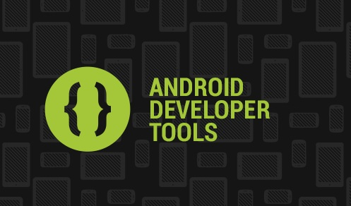
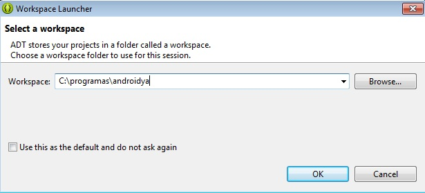
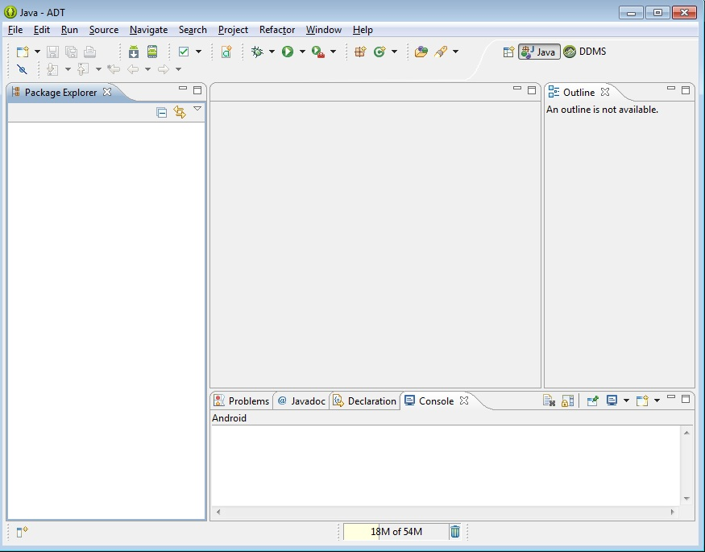
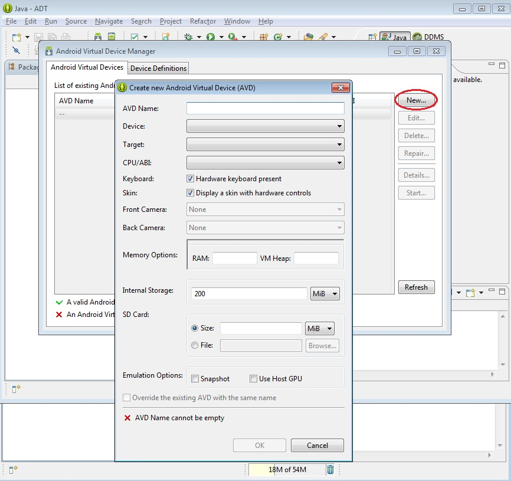
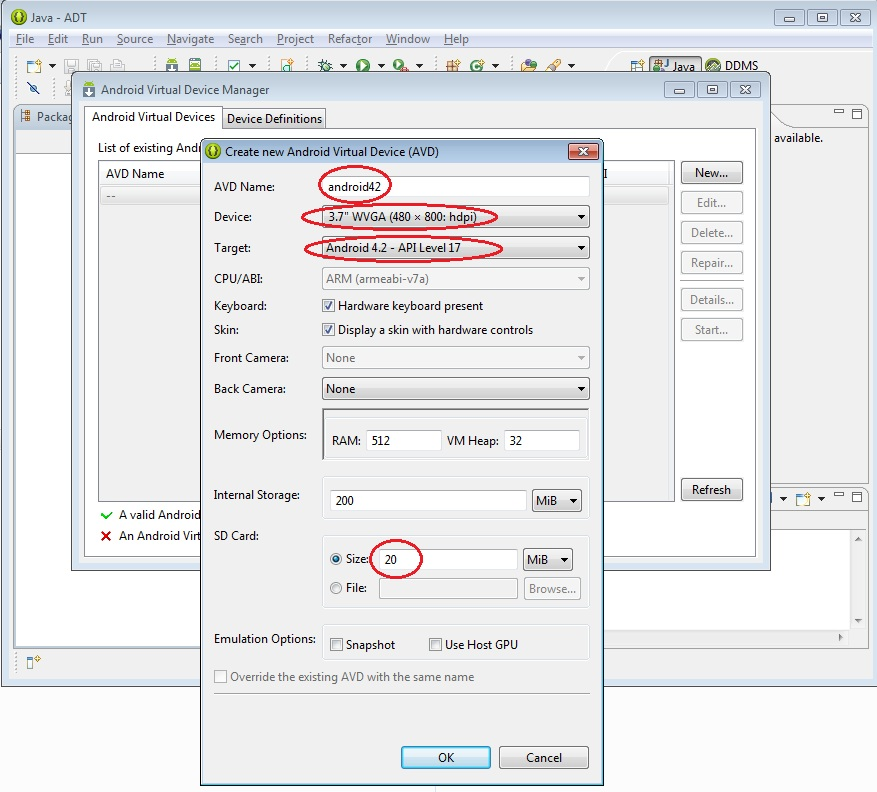

1 - Instalación de AndroidYa se encuentra disponible el nuevo tutorial para aprender android con el nuevo entorno Android Studio propuesto por Google y que remplaza a Eclipse. |
1 - Primero debemos instalar el compilador de Java y la máquina virtual. Estas herramientas las podemos descargar de:
Java SE Development Kit (JDK).
2 - El segundo paso es la descarga del ADT (que contiene todo lo necesario para comenzar el desarrollo de aplicaciones en Android), lo hacemos del sitio (descargar el de 32 o 64 bit según el JDK de Java que ya tenemos instalado del paso anterior):
Android SDK.
3 - El tercer paso es descomprimir el ADT, por ejemplo en la raiz de c:
4 - El cuarto paso es ejecutar el Eclipse:
Nos dirigimos a la carpetas creadas cuando descomprimimos el ADT y vemos que tenemos dos carpetas:
eclipse sdkEntramos a la carpeta eclipse y ejecutamos eclipse.exe
Debe aparecer una ventana de inicio similar a esta:
Nos pide seguidamente la carpeta donde deseamos ir almacenando los proyectos que desarrollemos:
Ahora ya estamos en el entorno que tiene una vista similar a esta (recordemos que es el Eclipse con algunos cambios desarrollados por Google), la primera vez que ingresamos nos aparece una pantalla de bienvenida pero podemos cerrarla haciendo clic en la cruz de la pestaña y ya tenemos el entorno de trabajo:
7 - Por último debemos crear el AVD (Android Virtual Device) para ello nos dirigimos a la opción Window -> Android Virtual Device Manager.
En este diálogo debemos crear el emulador de Android (presionamos el botón New...):

En este diálogo asignamos un nombre a nuestro AVD, elegimos un dispositivo (que no sea tan grande ya que no entrara en pantalla, podemos probar con WVGA(480,800)), lo enlazamos con la versión de SDK respectivo, fijamos un tamaño al SD Card:

Ya tenemos todo configurado para el desarrollo de aplicaciones Android.